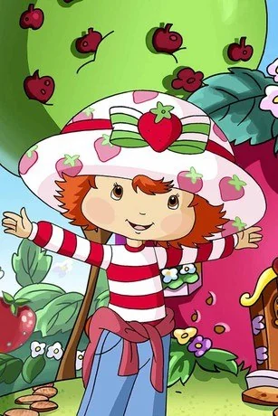
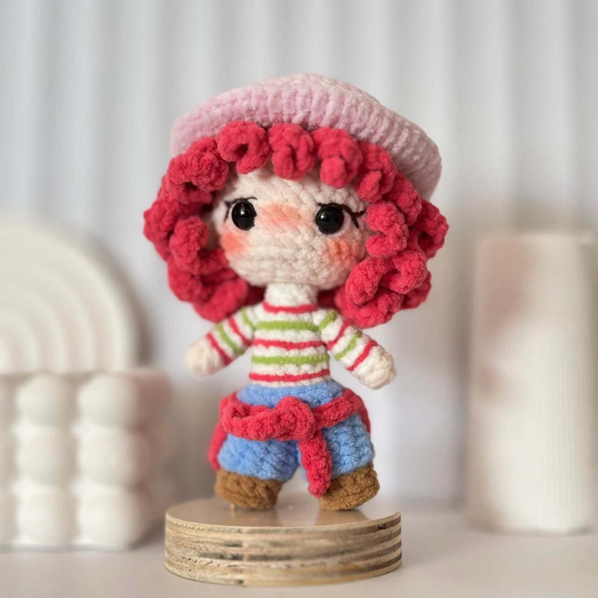
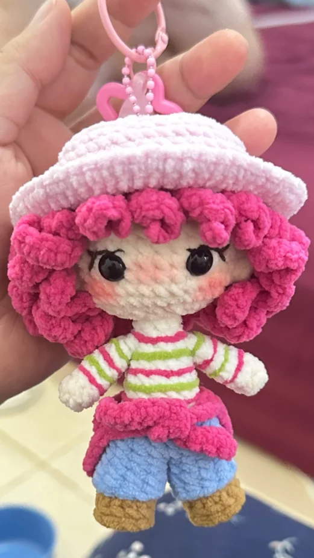

Preview Desain
Semua opsi memakai foto yang sama (referensi pelanggan & hasil rajutan). Pilih nomor yang paling cocok, nanti saya pasang di website.
Referensi dan hasil ditampilkan bersamaan, dipisah panah.
Paling jelas & tanpa interaksi

Dari gambar, jadi nyata.
Referensi Berrygirl diwujudkan menjadi boneka rajut custom dengan karakter yang tetap terasa khas.
Dua foto ditumpuk miring seperti tempelan album, dengan tulisan tangan.
Paling hangat & personalArahkan kursor (atau sentuh) untuk melihat kartu bergeser sedikit.
Menambahkan foto tangan sedang merajut sebagai tahap tengah.
Paling bercerita
Satu kartu, klik untuk membalik dari referensi ke hasil.
Paling ringkas & interaktifHalaman ini hanya untuk preview dan tidak diindeks Google.